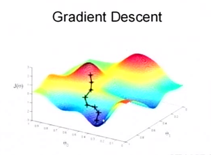
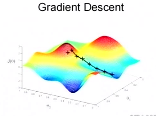
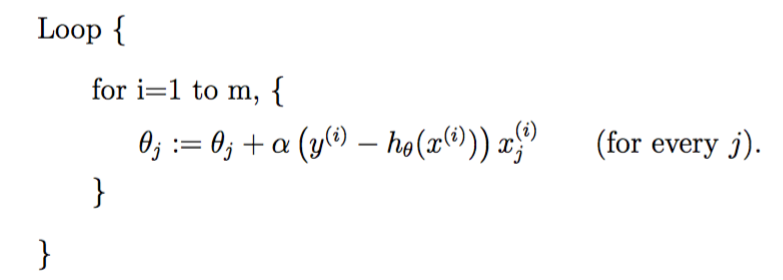

回归分析¶
目录
线性回归（Linear Regression）¶
1 引言¶
回归在数学上来说是给定一个点集，能够用一条曲线去拟合之，如果这个曲线是一条直线，那就被称为线性回归，如果曲线是一条二次曲线，就被称为二次回归。回归还有很多变种，如locally weighted回归，logistic回归，等等。
用一个很简单的例子来说明回归(这个例子来自很多的地方，也在很多的open source的软件中看到，比如说weka），大概就是，做一个房屋价值的评估系统，一个房屋的价值来自很多地方，比如说面积、房间的数量（几室几厅）、地段、朝向等等，这些影响房屋价值的变量被称为 特征 (feature)，feature在机器学习中是一个很重要的概念，有很多的论文专门探讨这个东西。在此处，为了简单，假设我们的房屋就是一个变量影响的，就是房屋的面积。我们可以做出一个图，x轴是房屋的面积，y轴是房屋的售价，如果来了一个新的面积，假设在销售价钱的记录中没有的，我们怎么办呢？我们可以用一条曲线去尽量准地拟合这些数据，那么对于新的输入数据，我们可以将曲线上这个点对应的值返回。
首先给出一些概念和常用的符号，在不同的机器学习书籍中可能有一定的差别。
房屋销售记录表—— 训练集 (training set)或者 训练数据 (training data), 即输入数据，一般称为x
房屋销售价钱 - 输出数据，一般称为y
拟合的函数（或者称为 假设 或者 模型 ），一般写做 \(y=h(x)\)
训练数据的条目数(#training set), 一条训练数据是由一对输入数据和输出数据组成的 \((x^{(i)},y^{(i)})\)
输入数据的维度(特征的个数，#features)， \(n\)
下面是一个典型的机器学习的过程，首先给出一个输入数据，我们的算法会通过训练得到一个估计函数 \(h\) ，这个函数能够对新加入的数据给出一个新的估计，也被称为构建一个模型，就如同上面的线性回归函数。
{kind=link}
2 线性回归¶
2.1 一般模型¶
用 \(x_1,x_2,…,x_n\) 描述feature里面的分量，比如 \(x_1=\) 房间的面积， \(x_2=\) 房间的朝向等等，我们可以做出一个估计函数：
\(\theta_j\) 在这儿称为 参数 （或者 权重 ），用于调整feature中每个分量的影响力，就是到底是房屋的面积更重要还是房屋的地段更重要。令 \(x_0= 1\) ，则上式可以用向量的方式来表示为（其中 \(\theta_0\) 为 截距项 (intercept term ））：
为了评估学习得到的 \(\theta\) 是否比较好，我们通过比较 \(h\) 函数与 \(y\) 的接近程度来评估。这个函数称为 代价函数 (cost function）、 损失函数 (loss function）或者 错误函数 (error function)，描述 \(h\) 函数 不好 的程度：
这个错误估计函数是将对 \(x^{(i)}\) 的估计值与真实值 \(y^{(i)}\) 差的平方和作为错误估计函数，前面乘上的 \(1/2\) 是为了在求导的时候，将这个系数抵消。
注解
这里的 \(m\) 表示记录条数（#training set), (2) 的 \(n\) 则表示特征数（#features）
2.2 最小化 \(J(\theta)\) 的方法¶
调整 \(\theta\) 以使得 \(J(\theta)\) 取得最小值的方法有很多，其中有：
3 局部加权线性回归¶
模型的不同选择（如线性、二阶、三阶等）会造成欠拟合和过拟合，因此特征的选择对于学习算法的性能起着很重要的作用（当我们讲到模型选择时，我们也期望算法能自动选择好的特征集合）。局部加权线性回归(Locally weighted linear regression，LWR) 的中心思想是在对参数进行求解的过程中，令每个样本对当前参数值的影响享有不同权重，即在预测一个点的值时，选择和这个点相近的点而不是全部的点做线性回归。
在前述的线性回归中，预测输出的步骤如下：
Fits \(\theta\) to minimize \(\sum_i(y^{(i)}-\theta^Tx^{(i)})^2\)
Output \(\theta^Tx\)
而LWR的步骤如下：
Fits \(\theta\) to minimize \(\sum_iw^{(i)}(y^{(i)}-\theta^Tx^{(i)})^2\)
Output \(\theta^Tx\)
其中， \(w^{(i)}\) 是非负值权重，显然，当某个 \(i\) 的 \(w^{(i)}\) 较大时，就要花很多精力选择其对应的 \(\theta\) 值以使得代价函数变小，反之则对应项造成的误差几乎可以忽略。 \(w^{(i)}\) 一般设置为：
显然，权重的大小取决于要预测的点 \(x\) 的位置，如果 \(|x^{(i)}−x|\) 的值很小（即离 \(x\) 很近）， \(w^{(i)}\) 接近 \(1\) ；相反，距离越大 \(w^{(i)}\) 越小。\(\tau\) 被称为 波长参数 (bandwidth parameter），控制权重随距离下降的速率。
这个方法的问题在于，对于每一个要计算的点，都要重新估计一个线性回归模型，这样似的计算代价极高。Andrew Moore的kd－tree算法可以对该问题进行优化。
LWR是 非参算法 (non-parametric algorithm ），而前述的线性回归是 参数算法 (parametric algorithm ），因为后者有固定的、有限个的参数θ_i，一旦确定了就不需要再为未来的预测重新计算，而前者则需要保留训练参数为每一次预测计算新的参数。non-parametric 的意思就是用于表达 \(h\) 的参数 \(\theta_i\) 的个数随着训练集的大小线性变化。
逻辑回归¶
1 引言¶
对于目标值是连续变量的问题来说，线性回归可能会解决得很好，即便不能用线性模型，也能使用局部加权回归解决。但对于目标值是离散变量的分类问题来说，线性回归的鲁棒性很差，如图1.b所示，因最右边噪点的存在，使回归模型在训练集上表现都很差。另外，以二分类问题为例（设目标值为 \({0,1}\) ),超过目标值的预测结果是没有意义的，因此就有了 逻辑回归 (Logistic Regression, LR)，LR模型其实仅在线性回归的基础上，套用了一个逻辑函数，但也就由于这个逻辑函数，使得逻辑回归模型成为了机器学习领域一颗耀眼的明星，更是计算广告学的核心。

线性回归示例¶
2 算法介绍¶
2.1 基本原理¶
以二分类问题为例，假设目标值为 \({0,1}\) ，LR将估计函数 \(h_{\theta}(x)\) 改为：
其中 \(\theta^T x=\theta_0 + \sum_{j=1}^n\theta_j x_j\) ,
称为 逻辑函数 （logistic function ）或（sigmoid function ），其曲线如下图所示：

逻辑曲线¶
由于 \(g(z)\) 在 \(z\rightarrow \infty\) 时趋于 \(1\) ，在 \(z\rightarrow\infty\) 时趋于 \(0\) ， \(h_{\theta}(x)\) 就被限制在 \(0\) 和 \(1\) 之间。至于为什么选择这个函数，原因在 GLMs讨论 。
逻辑函数具有如下性质：
2.2 求 \(\theta\) 的方法¶
有了这个回归模型，接下来怎么计算 \(\theta\) 呢？就像推导出最小二乘能作为最大似然估计，我们也给定一些概率假设来通过最大似然估计参数。假设：
上式也可以写成:
假设 \(m\) 个训练样本相互独立，则参数在整个数据集上的似然函数（likelihood ）如下：
为了计算方便，对似然函数取对数：
2.2.1 梯度下降法¶
为了取得最大值，对其使用更新规则如下的梯度下降法（因为这里是为了最大化，因此使用＋而非－）：
假设只有一个样本，对 \(\ell (\theta)\) 求导（其中使用了 \(g(z)\) 的 求导性质 ）:
则 随机梯度下降 规则如下：
上式与 LMS的形式 一样，但实际上是不一样的，因为这里的 \(h_{\theta}(x)\) 不一样，它是关于 \(\theta ^T x^{(i)}\) 的非线性函数。但这种相同形式的更新规则并不是巧合，而几乎是一种通用的规则，你可以选择不同的假设，但如果使用梯度下降法的话，更新规则都如上式，具体解释在GLM模型部分给出(??)。
2.2.2 牛顿法¶
求最大似然函数的解可以转化为求其一阶导数为 \(0\) 的方程的解，即令牛顿法中的函数 \(f\) 为 \(\ell '(\theta)\) ,则更新规则如下：
如果目标函数求的是最小值的话，更新规则依旧不变，因此要判断得到的参数是使得目标函数最大化还是最小化，可以通过判断二阶导的值来判断：小于 \(0\) 为最大值，大于 \(0\) 为最小值。
上面是当参数 \(\theta\) 为实数的情况，而实际上逻辑回归中的参数为向量，因此更新规则为：
其中 \(H\) 是个 \(n\times n\) 的Hessian矩阵（实际上应该是 \((n+1)\times (n+1)\) ，因为包含 截距项 ), \(n\) 为参数向量的长度。
牛顿法相对于（批量）梯度下降法的优点是收敛速度快，通常几十次迭代就可以收敛。它也被称为二次收敛（quadratic convergence），因为当迭代到距离收敛比较近的时候，每次迭代都能使误差变为原来的平方。缺点是当参数向量较大时，每次迭代比梯度下降更expensive，因为要计算 \(n\times n\) 的Hessian矩阵的逆。
When Newton’s method is applied to maximize the logistic regression log likelihood function \(\ell (\theta)\) , the resulting method is also called Fisher scoring .
感知器算法¶
考虑改善逻辑回归方法，将其输出强制变为 \(0\) 或者 \(1\) 的离散值而非概率，那么很自然能想到将上面的 \(g\) 替代为阈值函数:
使用上述函数构造的得到的 \(h_{\theta}(x)\) 并使用 (12) 所示的更新规则，得到的就是 感知器学习算法 （perceptron learning algorithm，PLA）。感知器学习算法是人工神经网络的基础。
Note however that even though the perceptron may be cosmetically similar to the other algorithms we talked about, it is actually a very different type of algorithm than logistic regression and least squares linear regression; in particular, it is difficult to endow the perceptron’s predic- tions with meaningful probabilistic interpretations, or derive the perceptron as a maximum likelihood estimation algorithm.
广义线性模型¶
1 介绍¶
在了解广义线性模型（Generalized Linear Models ，GLMs）前，先要了解 指数分布族 （exponential family distributions），通过指数分布族我们可以构建 GLM。
注意指数数布族中 (30) 与 (32) 的 \(\eta\) 变量，前者的 \(\eta\) 与伯努利分布中的参数 \(\phi\) 的关系是 logistic 函数 ，通过推导可以得到 逻辑回归 ；后者的 \(\eta\) 与正态分布的参数 \(\mu\) 的关系是二者相等，可以推导出 最小二乘模型 (Ordinary Least Squares)。通过这两个例子，我们大致可以得到结论： \(\eta\) 以不同的映射函数与其他概率分布函数中的参数发生联系，从而得到不同的模型，GLM正是将指数分布族中的所有成员（每个成员正好有一个这样的联系）都作为线性模型的扩展，通过各种非线性的连接函数将线性函数映射到其他空间从而大大扩大了线性模型可解决的问题。
下面们看 GLM 的形式化定义，GLM 有三个假设：
\(y|x; \theta \sim ExponentialFamily(\eta)\) ,即给定样本 \(x\) 与参数 \(\theta\) , \(y\) 的分布以参数 \(\eta\) 服从指数分布族中的某个分布；
给定一个 \(x\) ，我们的目的是预测 \(T(y)\) 的值。在我们的大多数例子中 \(T(y) = y\) , 这意味着我们希望预期输出 \(h(x)\) 通过满足 \(h_{\theta}(x)= E[T(y)|x]\) 得到；
\(\eta = \theta ^Tx\)
基于上述假设构建的模型对于模拟 \(y\) 的不同分布也是有效的。例如逻辑回归和最小二乘都可以作为GLM推导得到。
2 GML 举例¶
2.1 最小二乘（Ordinary Least Squares ）¶
最小二乘是GLM的特例。假设目标变量 \(y\) 是连续的，我们model给定 \(x\) 时 \(y\) 的条件分布为高斯分布 \(N(\mu, \sigma ^2)\) (这里 \(\mu\) 决定于 \(x\) ）,根据“指数分布族”部分高斯分布的内容可知，其对应指数分布族时 \(\mu =\eta\) ，因此最小二乘模型的推导过程如下:
2.2 逻辑回归¶
现在考虑逻辑回归，这里讨论二分类问题，因此 \(y\in {0,1}\) 。因为 \(y\) 是binary-valued，所以很自然地可以想到使用伯努利分布来model给定 \(x\) 时 \(y\) 的条件分布，所以，Logistic 模型的推导过程如下:
So, this gives us hypothesis functions of the form \(h_{\theta}(x) = 1/(1 + e^(−\theta^T x))\) . If you are previously wondering how we came up with the form of the logistic function \(1/(1 + e^(−z))\) , this gives one answer: Once we assume that \(y\) conditioned on \(x\) is Bernoulli, it arises as a consequence of the definition of GLMs and exponential family distributions.
其中，给出分布的均值的 \(\eta\) 的函数 \(g\) ( \(g(\eta) = E[T(y);\eta]\) ) (即将 \(\eta\) 与原始概率分布中的参数联系起来的函数 ) 称为 正则响应函数 (canonical response function)，如 \(\phi = 1/(1 + e^(−\eta))\) 、 \(\mu = \eta\) 即是正则响应函数。正则响应函数的逆称为 正则关联函数 (canonical link function)。
对于广义线性模型，需要决策的是选用什么样的分布，当选取高斯分布时，我们就得到最小二乘模型；当选取伯努利分布时，我们得到 logistic 模型（这里所说的模型是假设函数 \(h\) 的形式）。 所以总结一下，广义线性模型通过假设一个概率分布，得到不同的模型，而之前所讨论的梯度下降、牛顿方法都是为了求取模型中的线性部分( \(\theta ^Tx\) )的参数 \(\theta\) 的。
2.3 Softmax Regression¶
多项式分布推导出的 GLM 可以解决多类分类问题，是 logistic 模型的扩展。 应用的问题比如邮件分类、预测病人疾病等。
Softmax回归模型是logistic回归模型在多分类问题上的推广 有监督学习
学习课程： UFLDL_Softmax回归
多项式分布的目标值 \(y\in {1,2,3,\dots,k}\) ，其概率分布为:
由于所有参数满足 \(\sum \phi _i=1\) , 所以将全部 \(k\) 个 \(\phi _i\) 作为参数是有冗余的，因此仅保留其中 \(k−1\) 个参数，使得 \(\phi _k=p(y=k|x;\theta)=1−\sum_{i=1}^{k−1}\phi _i\) ，为了将多项式表达为指数分布族的形式，首先定义 \(T(y)\in R^{k−1}\) 如下：
因为 \(T(y)\) 是个 \(k−1\) 维的向量，所以用 \((T(y))_i\) 表示其中的第 \(i\) 个元素。我们还可以引入指示函数(indicator function) \(I\) ( \(I(True) = 1, I(False) = 0\) ），这样，\(T(y)\) 向量中的某个元素还可以表示成：
因此，
于是，二项分布转变为指数分布族的推导如下：
其中
关联函数 \(\eta\) 可表示为：
注解
为了方便，定义 \(\eta _k=\log \frac{\phi_k}{\phi_k} = 0\)
对关联函数求逆的过程如下：
得到响应函数 \(\phi _i\) (这个函数也称为 softmax function )
根据GLM的第3条假设，就有 \(\eta _i= \theta_i^Tx (i=1,\dots,k−1)\) 为了方便，定义 \(\theta_k=0\) ， 则有 \(\eta_k=\theta_k^T x=0\) ，因此多项式分布的概率分布为：
因此，假设函数 \(h\) 为：
那么如何根据假设函数 \(h\) 求得参数 \(\theta\) ，当然还是最大似然函数的方法，log 最大似然函数如下（if we have a training set of m examples \({(x^{(i)}, y^{(i)}); i = 1,\dots, m}\) ):
接下来使用梯度下降算法或者牛顿方法求得参数后，使用假设函数 \(h\) 对新的样例进行预测，即可完成多类分类任务。这种多种分类问题的解法被称为 softmax regression。
代码：
指数分布簇¶
指数分布族 （exponential family distributions）是指可以表示为指数形式的概率分布。指数分布的形式如下:
其中， \(\eta\) 称为分布的 自然参数 (nature parameter／canonical parameter )； \(T(y)\) 是 充分统计量 (sufficient statistic)，通常 \(T(y)=y\) ； \(a(\eta)\) 是log partition function ，The quantity e− \(a(\eta)\) essentially plays the role of a nor- malization constant, that makes sure the distribution \(p(y;\eta)\) sums/integrates over y to \(1\) .
当参数 \(a, b, T\) 都固定的时候，就定义了一个以 \(\eta\) 为参数的函数族。实际上，大多数概率分布都可以表示成 (29) 的形式。比如：
伯努利分布(Bernoulli)：对 \(0, 1\) 问题进行建模；
多项式分布(Multinomial)：对有 \(K\) 个离散结果的事件j建模；
泊松分布(Poisson)：对计数过程进行建模，比如网站访问量的计数问题、放射性衰变的数目、商店顾客数量等问题；
伽马分布(gamma)与指数分布(exponential)：对有间隔的正数进行建模，比如公交车的到站时间问题；
\(\beta\) 分布：对小数建模；
Dirichlet 分布：对概率分布进建模；
Wishart 分布：协方差矩阵的分布；
高斯分布(Gaussian)；
现在，我们将高斯分布与伯努利分布表示成为指数分布族的形式。伯努利分布是对 \(0,1\) 问题进行建模的分布,它可以用如下形式表示（ \(y\in {0,1}\) ）：
由上式，伯努利分布表示成了 (29) 的形式，其中：
可以看到， \(\phi\) 的形式与 逻辑回归 中的 logistic 函数一致，这是因为 logistic 模型对问题的 前置概率估计 是伯努利分布的缘故。
再来看高斯分布。由线性回归的概率推导可知，高斯分布的方差 \(\sigma ^2\) 与 \(\theta\) 和 \(h_{\theta}(x)\) 无关，因而为了简便计算，我们取 \(\sigma ^2=1\) ，高斯分布转换为指数分布族形式的推导过程如下：
其中
推导的关键在于将指数内部的纯 \(y\) 项移到外面，纯非 \(y\) 项作为函数 \(a\) ，混杂项为 \(\eta^T T(y)\) 。
正则方程¶
正则方程（normal equations ）将 回归问题 转换为矩阵方式表达，并通过将 \(J\) 对 \(\theta _j\) 的偏导数置零求解。
给定训练集，定义设计矩阵(design matrix) \(\mathbf{X}\) ( \(m\times n\) ,实际应该是 \(m\times (n+1)\) ，因为加入 \(x_0=1\) ）和向量 \(\vec{y}\) ：
由 \(h_{\theta}(x^{(i)}) = (x^{(i)})^T\theta\) , 我们很容易得到：
又因为
根据矩阵导数运算规则， \(J\) 对 \(\theta\) 的偏导数如下
令导数为 \(0\) 则得到如下正则方程：
因此
梯度下降法¶
梯度下降、牛顿法、拟牛顿法都是求解无约束最优化问题的常用方法，且均是迭代算法。
1 引言¶
1.1 基本思想 2¶
梯度下降法又叫最速下降法（steepest descend method），用来求解表达式最大或者最小值的，属于无约束优化问题。它利用负梯度方向来决定每次迭代的新的搜索方向，使得每次迭代能使待优化的目标函数逐步减小。梯度下降法是2范数下的最速下降法。 最速下降法的一种简单形式是: \(x_{k+1}=x_k−a\times g(k)\) ，其中 ;math:a 称为 学习速率 ，可以是较小的常数。 \(g(k)\) 是 \(x_k\) 的梯度。
首先我们应该清楚，一个多元函数的梯度方向是该函数值增大最陡的方向。具体化到一元函数中时，梯度方向首先是沿着曲线的切线的，然后取切线向上增长的方向为梯度方向；二元或者多元函数中，梯度向量为函数值f⁆对每个变量的导数，该向量的方向就是梯度的方向，当然向量的大小也就是梯度的大小。
现在假设我们要求函数 \(f\) 的最小值，采用梯度下降法，如下图所示：

首先选取一个初始点，下一个点的产生是沿着梯度直线方向，这里是沿着梯度的反方向(因为求的是最小值，如果是求最大值的话则沿梯度的方向即可)。梯度下降法的迭代公式为：
其中 \(\hat{s}^{(k)}\) 表示的是梯度的负方向, \(\rho_k\) 表示的是在梯度方向上的搜索步长。梯度方向我们可以通过对函数求导得到，步长的确定比较麻烦，太大了的话可能会发散，太小收敛速度又太慢。一般确定步长的方法是由线性搜索算法来确定，即把下一个点的坐标 \(a_{k+1}\) 看做是 \(\rho_k\) 的函数，然后求满足 \(f(a_{k+1})\) 的最小值的 \(\rho_k\) 即可。采用梯度下降算法进行最优化求解时，算法迭代的终止条件是梯度向量的幅值接近 \(0\) 即可，可以设置个非常小的常数阈值。
1.2 函数凹凸性讨论¶
当目标函数是凸函数时，梯度下降法的解释全局最优解。一般情况下，其解不保证是全局最优解。
当目标函数不是凸函数时，可以将目标函数近似转化成凸函数。或者用一些智能优化算法例如模拟退火，以一定的概率跳出局部极值，但是这些算法都不保证能找到最小值。
2 算法介绍 1¶
根据前面 回归部分 的学习知道，为了得到较好的 \(\theta\) ，通过最小化 \(J(\theta)\) 来实现。其中一种是梯度下降法（gradient descent），其流程如下：
1）首先对 \(\theta\) 赋值，这个值可以是随机的，也可以让 \(\theta\) 是一个全零的向量。 2）改变 \(\theta\) 的值，使得 \(J(\theta)\) 按梯度下降的方向进行减少。
为了更清楚，给出下面的图：
参数 \(\theta\) 与误差函数 \(J(\theta)\) 的关系图¶
这是一个表示参数 \(\theta\) 与误差函数 \(J(\theta)\) 的关系图，红色的部分是表示 ;math:J(theta) 有着比较高的取值，我们需要的是，能够让 \(J(\theta)\) 的值尽量的低，也就是深蓝色的部分。 \(\theta_0\) ， \(\theta_1\) 表示 \(\theta\) 向量的两个维度。
梯度下降法的第一步是给 \(\theta\) 一个初值，假设随机给的初值是在图上的十字点。然后我们将 \(\theta\) 按照梯度下降的方向进行调整，就会使得 \(J(\theta)\) 往更低的方向进行变化，如 fig_sgd2_a 所示，算法的结束将是在 \(\theta\) 下降到无法继续下降为止。当然，可能梯度下降的最终点并非是全局最小点，可能是一个局部最小点，如 fig_sgd2_b 所示：这是我们重新选择了一个初始点得到的，看来我们这个算法将会在很大的程度上被初始点的选择影响而陷入局部最小点 。

梯度下降法示意(a)¶ |

梯度下降法示意(b)¶ |
下面我将用一个例子描述一下梯度减少的过程 3 ，为了方便计算， 假设只有一条训练数据 ，则对 \(J(\theta)\) 求偏导有：
式 (43) 是更新的过程，也就是 \(\theta_j\) 会向着梯度最小的方向改变。 \(\theta_j\) 表示更新之前的值，－后面的部分表示按梯度方向减少的量， \(\alpha\) 称为 学习速率 (learning rate )，也就是每次按照梯度减少的方向变化多少，其值的大小需要在实践中进行调整，过小会导致迭代多次才能收敛，过大则会导致越过最优点发生振荡。
上式就是 LMS更新规则，也称为 Widrow-Hoff 学习规则 。一个很重要的地方值得注意的是，梯度是有方向的，对于一个向量 \(\theta\) ，每一维分量 \(\theta_j\) 都可以求出一个梯度的方向，我们就可以找到一个整体的方向，在变化的时候，我们就朝着下降最多的方向进行变化就可以达到一个最小点，不管它是局部的还是全局的。用更简单的数学语言进行描述步骤2）是这样的：
倒三角形表示梯度，按这种方式来表示， \(\theta_j\) 就不见了。运用这个规则直到收敛，收敛的判断有两种规则：一是判断两次迭代后参数的变化，二是判断迭代后目标函数的变化。
上面根据单训练样本推导出了LMS更新规则，将其推广到多训练样本有两种方法：
批量梯度下降（batch gradient descent ，BGD）

while True: weights_grad = evaluate_gradient(loss_fun, data, weights) weights += - step_size * weights_grad # perform parameter update
随机／增量梯度下降（stochastic gradient descent ／incremental gradient descent，SGD）
while True: data_batch = sample_training_data(data, 1) # use a single example weights_grad = evaluate_gradient(loss_fun, data_batch, weights) weights += - step_size * weights_grad # perform parameter update
在训练集比较大时，批量梯度下降每迭代一次就要遍历全部数据一次，因此随机梯度下降要优于批量梯度下降，它在更新参数时，只需要一个实例便足够，因此会更快地靠近最小值（但会导致遍历次数增多，不能精确收敛到最优值。即可能永远不收敛于最小值，而是在附近震荡）。
梯度下降法会可能陷入局部极值点，解决方法是随机初始化，寻找多个最优解，然后在这些最优解中找最终结果。 批量梯度下降和随机梯度下降的收敛条件相似，但是：In fact, in machine learning tasks, one only uses ordinary gradient descent instead of SGD when the function to minimize cannot be decomposed as above (as a mean)
小批量随机梯度下降法（Minibatch Stochastic Gradient Descent，MSGD）
简单来说，就是每遍历完一个batch的样本才计算梯度和更新参数，一个batch一般有几十到几百的单个样本。PS：随机梯度下降则是一个样本更新一次。
while True: data_batch = sample_training_data(data, 256) # sample 256 examples weights_grad = evaluate_gradient(loss_fun, data_batch, weights) weights += - step_size * weights_grad # perform parameter update
相比于SGD噪声的影响减小，但更新／收敛速度减小。
Momentum
提出原因：
随机梯度下降，有时候解决问题太慢了
可能进入了一个平坦地区，下降好多步，也走不到头
进入了一个泥石流区域，向左1步，向右1步，走半天也走不出去
冲量就是解类似的问题的
思路：
如果把要优化的目标函数看成山谷的话，可以把要优化的参数看成滚下山的石头，参数随机化为一个随机数可以看做在山谷的某个位置以 \(0\) 速度开始往下滚。目标函数的梯度可以看做给石头施加的力，由力学定律知： \(F=m\times a\) ，所以梯度与石头下滚的加速度成正比。因而，梯度直接影响速度，速度的累加得到石头的位置，对这个物理过程进行建模，可以得到参数更新过程为：
具体方法：
每一步的梯度下降的量和方向，要参考前面的步骤，要是方向一致，就大步走；
要是忽左忽右，就中和一下，往前走
(45)¶\[v=\gamma v-\alpha \nabla J(\theta)\](46)¶\[\theta=\theta+v\]v = momentum * v - learning_rate * dx # integrate velocity x += v # integrate position
\(v\) 代表速率向量，由于梯度比常规方法更大， \(\alpha\) 需要更小。 \(\gamma\in(0,1]\) 即动量，该参数确定上一次梯度对当前更新的贡献率，虽然名字为动量，其物理意义更接近于摩擦，其可以降低速度值，降低了系统的动能，防止石头在山谷的最底部不能停止情况的发生。动量的取值范围通常为 \([0.5, 0.9, 0.95, 0.99]\) ，一种常见的做法是在迭代开始时将其设为 \(0.5\) ，在一定的迭代次数（epoch）后，将其值更新为 \(0.99\) 。
式 (45) 也可以表达为：
(47)¶\[\Delta \theta ^{k+1} = \alpha \Delta \theta^k + (1-\alpha)\frac{\partial L(\theta ^k,z)}{\partial \theta ^k}\]where \(\alpha\) is a hyper-parameter that controls the how much weight is given in this average to older vs most recent gradients.
在实践中，一般采用SGD+momentum的配置，相比普通的SGD方法，这种配置通常能极大地加快收敛速度。
（Averaged Stochastic Gradient Descent ，ASGD)
在SGD的基础上计算了权值的平均值。因此在SGD的基础上增加参数$t_0$
- ASGD优缺点
运算花费 second order stochastic gradient descent (2SGD)一样小。
比SGD的训练速度更为缓慢。
$t_0$的设置十分困难
3 细节讨论¶
3.2 学习率的更新¶
在算法迭代过程中逐步降低学习率（step_size）通常可以加快算法的收敛速度。常用的用来更新学习率的方法有三种： - 逐步降低（Step decay），即经过一定迭代次数后将学习率乘以一个小的衰减因子。典型的做法包括经过5次迭代（epoch）后学习率乘以 \(0.5\) ，或者 \(20\) 次迭代后乘以 \(0.1\) 。 - 指数衰减（Exponential decay），其数学表达式可以表示为： \(\alpha=\alpha_0 e^{−kt}\) ，其中， \(\alpha_0\) 和 \(k\) 是需要设置的超参数，一般取 \(10^{−3}\) 或更小， \(t\) 是迭代次数。 - 倒数衰减( \(1/t\) decay），其数学表达式可以表示为： \(\alpha = \alpha_0/(1+kt)\) ，其中， \(\alpha_0\) 和 \(k\) 是需要设置的超参数， \(t\) 是迭代次数。 \(\alpha_0\) 要足够小，这样能保证收敛，但超参数选的不好时会收敛得很慢。
实践中发现逐步衰减的效果优于另外两种方法，一方面在于其需要设置的超参数数量少，另一方面其可解释性也强于另两种方法。
3.3 缺点¶
由于处理的数据有不同的量纲和量纲单位，导致不同维度的数据之间尺度差异很大，如下图（左）所示，目标函数的等高线是椭圆形的。这样在通过最小化目标函数寻找最优解的过程中，梯度下降法所走的路线是锯齿状的，需要经过的迭代次数过多，严重影响了算法的效率。
解决这个问题有两个方法：
数据归一化（从数据预处理的角度考虑)
可以对数据进行归一化，例如采用min-max标准化将输入数据范围统一到 \([0,1]\) 之间：
(48)¶\[x^*=\frac{x-min}{max-min}\]处理后的结果如上图（右）所示，经过很少次数的迭代就可以达到目标函数的最低点，极大提高算法的执行效率。
二阶更新方法（从目标函数优化的角度考虑）
提升梯度下降法收敛速度的方法还包括将其由一阶提升为二阶，也就是牛顿法或者拟牛顿法（如常用的 L-BFGS）。然而，牛顿法和L-BFGS不适用于解决大规模训练数据集和大规模问题。 比如，常用的深度网络包括数百万个参数，每次迭代都要计算大小为 \([1,000,000 x 1,000,000]\) 的Hessian矩阵，需要占用3G多的内存，严重影响了计算效率。L-BFGS法不需要计算完全的Hessian矩阵，虽然没有了内存的担忧，但这种方法通常类似于批量梯度下降法，需要在计算整个训练集（通常为几百万个样本）的梯度后才能更新一次参数，严重影响了收敛速度。因而在深度神经网络领域很少使用L-BFGS来优化目标函数。
4 代码¶
4.1 编程思路¶
假设做回归问题。选取libsvm包里的例子数据heart_scale.mat作为分析数据。虽然是分类问题，但也可以看做回归，有些原理也相似。数据中heart_scale_inst包括270个13维的样本，label全部是+-1，这里看做回归。
假设要学习如式（1) 所示的函数，那么损失函数可以定义成：
其中 \(\mathbf{X}\) 可以看成一行一行的样本向量，那么 \(\theta\) 就是一列一列的了。这其实就是比较常用的square loss，for least squares regression or classification。那么我们的目标很简单，就是求使得损失达到最小值时的解：
像这种优化问题有很多求解方法，那咱们先直接求导吧，对于求导过程，好多同学还是不理解，可以用这种方法：首先定义损失变量
那么损失函数就可以表示成
一步一步地求导
再求：
那么把分步骤合起来就是使
的导数为 \(0\) ，即
整理一下：
用矩阵符号将上面的细节运算抽象一下：
让导数为 \(0\) ，那么求得的解为：
但是我们知道求矩阵 ( \(X^T X\) )的逆复杂度有点儿高， \(O(n^3)\) ，如果 \(n\) 很大，计算量很大。
可以用最小二乘或者梯度下降来求解，这里我们看看梯度下降的实现，梯度下降的思想不难，只要确定好梯度以及梯度的方向就ok，因为是梯度的反方向去下降，所以在对参数更新的时候要注意：
其中 \(\gamma\) 就是下降的速度了，这个很敏感的，一般是一个小的数值，可以从 \(0.01\) 开始尝试，越大下降越快，收敛越快。当然下降的速率可以改成自适应的，就是根据梯度的强弱适当调整步伐，这样效果还好一点儿。
{kind=link}
上图就是迭代目标函数值的情况，迭代终止的条件有很多种，这里取得：
代码也很简单，如果用matlab的话，矩阵计算就容易很多。
牛顿法¶
1 引言¶
最常见的迭代法是牛顿法。其他还包括最速下降法 、共轭迭代法、变尺度迭代法 、最小二乘法、线性规划、非线性规划、单纯型法 、惩罚函数法 、斜率投影法 、遗传算法、模拟退火等等。
牛顿法（Newton’s method）又称为牛顿-拉夫逊方法（Newton-Raphson method），它是一种在实数域和复数域上近似求解方程的方法。方法使用函数 \(f(x)\) 的泰勒级数的前面几项来寻找方程 \(f(x)=0\) 的根。
牛顿法最初由艾萨克·牛顿于1736年在 Method of Fluxions 中公开提出。而事实上方法此时已经由Joseph Raphson于1690年在Analysis Aequationum中提出，与牛顿法相关的章节《流数法》在更早的1671年已经完成了。
2 算法介绍¶
首先，选择一个接近函数 \(f(x)\) 零点的 \(x_0\) ，计算相应的 \(f(x_0)\) 和切线斜率 \(f′(x_0)\) （这里 \(f′\) 表示函数 \(f\) 的导数）。然后我们计算穿过点 \((x_0,f(x_0))\) 并且斜率为 \(f′(x_0)\) 的直线和 \(x\) 轴的交点的 \(x\) 坐标，也就是求如下方程的解：
我们将新求得的点的x⁆坐标命名为 \(x_1\) ，通常 \(x_1\) 会比 \(x_0\) 更接近方程 \(f(x_0 )=0\) 的解。因此我们现在可以利用 \(x_1\) 开始下一轮迭代。迭代公式可化简为：
已经证明，如果 \(f′\) 是连续的，并且待求的零点 \(x\) 是孤立的，那么在零点 \(x\) 周围存在一个区域，只要初始值 \(x_0\) 位于这个邻近区域内，那么牛顿法必定收敛。 并且，如果 \(f′(x)\) 不为 \(0\) ，那么牛顿法将具有平方收敛的性能。粗略的说，这意味着每迭代一次，牛顿法结果的有效数字将增加一倍。下图为一个牛顿法执行过程的例子：


上面是当参数x⁆为实数的情况，但参数为向量时，迭代公式为： 牛顿法的特点是：收敛速度快，迭代次数少，但是当Hessian矩阵很稠密时，每次迭代的计算量很大。随着数据规模的增大，Hessian矩阵会增大，所需存储空间、计算量随之增大，有时候大到不可计算，所以针对海量数据的计算，牛顿法不再适用。
PS:Quake III公开源码后，有人在game/code/q_math.c里发现了这样一段代码。它的作用是将一个数开平方并取倒，经测试这段代码比(float)(1.0/sqrt(x))快4倍，有兴趣的可以研究一下
3 拟牛顿法（Quasi-Newton Methods)¶
考虑到牛顿法的缺点，拟牛顿法在其基础上引入了Hessian矩阵的近似矩阵，避免每次迭代都计算Hessian矩阵的逆，它的收敛速度介于梯度下降法和牛顿法之间，因此拟牛顿法跟牛顿法一样，也是不能处理太大规模的数据。
拟牛顿法虽然每次迭代不像牛顿法那样保证是最优化的方向，但是近似矩阵始终是正定的，因此算法始终是朝着最优化的方向在搜索。
共轭梯度法（Conjugate Gradient,CG）¶
介于最速下降法与牛顿法之间的一个方法，它仅仅需要利用一阶导数的信息，克服了GD方法收敛慢的特点。
优化方法比较¶
1 梯度下降与牛顿法的比较¶
第一个不同之处在于梯度法中需要选择学习速率，而牛顿法不需要选择任何参数；
第二个不同之处在于梯度法需要大量的迭代次数才能找到最小值，而牛顿法只需要少量的次数便可完成。对比这两中方法的参数更新公式可以发现，两种方法不同在于牛顿法中多了一项二阶导数，这项二阶导数对参数更新的影响主要体现在 改变参数更新方向 上。如下图所示，红色是牛顿法参数更新的方向，绿色为梯度下降法参数更新方向，因为牛顿法考虑了二阶导数，因而可以找到更优的参数更新方向，在每次更新的步幅相同的情况下，可以比梯度下降法节省很多的迭代次数。

但是梯度法中的每一次迭代的代价要小，其复杂度为 \(O(n)\) ，而牛顿法的每一次迭代的代价要大，为 \(O(n^3)\) 。因此当特征的数量n比较小时适合选择牛顿法，当特征数 \(n\) 比较大时，最好选梯度法。
2 LBFGS、SCG和CG的比较¶
LBFGS算法在参数的维度比较低（一般指小于10000维）时的效果要比SGD和CG效果好，特别是带有convolution的模型。
针对高维的参数问题，CG的效果要比另2种好。也就是说一般情况下，SGD的效果要差一些，这种情况在使用GPU加速时情况一样，即在GPU上使用LBFGS和CG时，优化速度明显加快，而SGD算法优化速度提高很小。
在单核处理器上，LBFGS的优势主要是利用参数之间的2阶近视特性来加速优化，而CG则得得益于参数之间的共轭信息，需要计算器Hessian矩阵。
Footnotes